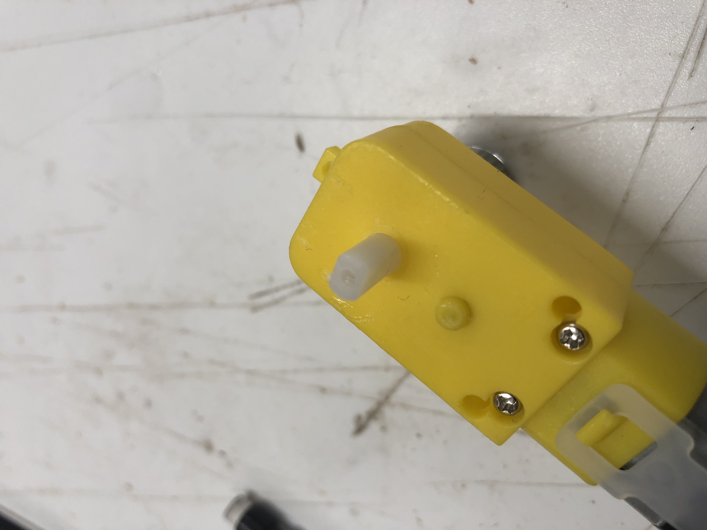
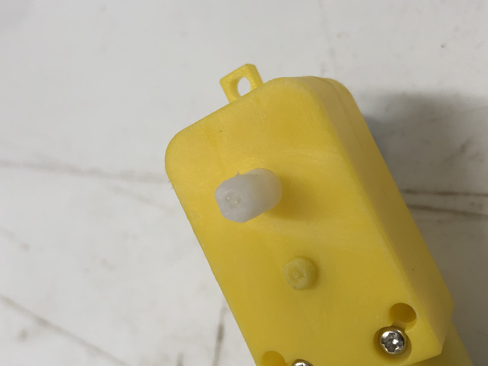
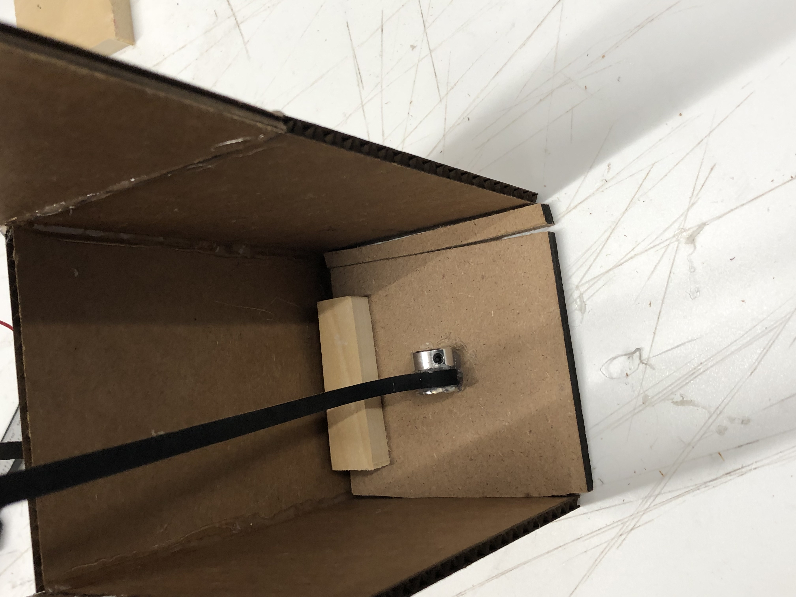
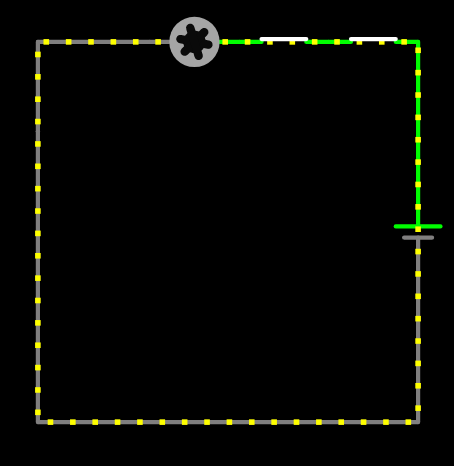

Week 3: Microcontroller Programming
Week 3 began extremely fast paced, as soon as I was able to go back to the lab I got back to work
I had found a new rope to use which wasnt elastic and was able to be wrapped around objects. This brought about the question, what do I wrap it around?
This was quickly answered, and I decided to use a extended metal bearing. However, the new issue was geting it onto the motor, a task which can be done by simply sanding it down until it fits
 This before and after shows the difference after sanding, which allowed me to fit the bearing in:

As seen above the next step was to simply attach the motor and the elevator lift
But you cant just have a floating motor, so I created an extremely simple wooden block to give the motor space to spin

In the end, I finally got the elevator to work despite all the troubles of last week

This wasnt good enough for me though, I wanted the elevator to work well, be stable, and eventually program it to go up and down with the push of a button
My first idea to try and balance the elevator out was to give it a counterweight, as I noticed it was a bit front heavy I placed the small piece of wood in the back
Addionally, if you look carefully at the image above I added a small piece of wood to make the elevator hit the walls of the shaft, in order to create friction for stabilization

Eventually I even found that we had long extending bearings which I glued together in order for the rope to stay in place at the middle
This further helped to stabalize the elevator as it went up, but something still wasnt right


I decided that I needed to cut the elevator so that it wouldnt hit the walls of the shaft as it was getting stuck so I cut and sanded it down
Despite this, my biggest breakthrough came from a suggestion from my teacher, who suggested using low friction rods to help stabalize the lift


How it works is that I added a top to the elevator shaft, drilled 4 holes into the lift, and to the foundation of the elevator so that they could stay in place
To add on, I decided to experiment with more complex arduino code and how it would work with my elevator and eventually make my own.
Luckily, my professor, Nathan Melenbrink had given a lecture on arduino code and had the perfect code for me to experiment the elevator and arduino coding
Thanks professor, links to his github are here
const int A1A = 3; // define pin 3 for A-1A (speed)
const int A1B = 4; // define pin 4 for A-1B (direction)
void setup() {
pinMode(A1A, OUTPUT); // specify these pins as outputs
pinMode(A1B, OUTPUT);
digitalWrite(A1A, LOW); // start with the motors off
digitalWrite(A1B, LOW);
}
void loop() {
// start the motor
digitalWrite(A1A, HIGH);
digitalWrite(A1B, LOW);
delay(4000); // allow the motor to run for 4 seconds
// stop the motor
digitalWrite(A1A, LOW); // setting both pins LOW stops the motor
digitalWrite(A1B, LOW);
delay(2000); // keep the motor off for 2 seconds
// start the motor in opposite direction
digitalWrite(A1A, LOW); // A1A needs to be LOW to switch direction
digitalWrite(A1B, HIGH);
delay(4000); // allow the motor to run for 4 seconds
// stop the motor
digitalWrite(A1A, LOW); // setting both pins LOW stops the motor
digitalWrite(A1B, LOW);
delay(2000);
}
In the end, the result was this:

Now I was finally close to finishing, the last things that had to be done was increase the stability even more and program the elevator to work off a button to ascend and descend
The stability part wasnt a big issue, i cut the corners of the lift in order to give it more space so that it wouldnt hit the shaft as friction was no longer a problem, making the lift look like this

The real headache began with coding the new arudino program
Initially the idea was to have a button which when pressed would make the elevator go up and then when pressed again go down
Sadly, this was too challenging and the idea of using two buttons instead came up in conversation, which helped simplify the procecss
However, even with this newfound idea the arduino was having some issues, a single pin had been messing up the entire program, as it was plugged into pin 1, which lead to issues with compatibility
Eventually, when we changed the pin value to 7 the program fixed itself, and finally all was well

All in all, I was pretty happy with how it came out in the end, id also like to extend my gratitude to Mustafa Omran, who helped me writing the intial arduino code his github is here as well my TA who is here
Lastly, what follows is the final arduino code as well as the curcuitry which made this all possible
const int A1A = 3;
const int A1B = 4;
const int buttonPin = 2;
const int buttonPin2 = 7;
int buttonState = 0;
int buttonState2 = 0;
void setup() {
pinMode(A1A, OUTPUT);
pinMode(A1B, OUTPUT);
pinMode(7, INPUT_PULLUP);
pinMode(2, INPUT_PULLUP);
digitalWrite(A1A, LOW);
digitalWrite(A1B, LOW);
Serial.begin(9600);
}
void loop() {
buttonState = digitalRead(buttonPin);
buttonState2 = digitalRead(buttonPin2);
if(buttonState == LOW){
digitalWrite(A1A, HIGH);
digitalWrite(A1B, LOW);
Serial.println("Down");
delay(50);
digitalWrite(A1A, LOW);
digitalWrite(A1B, LOW);
}
if(buttonState2 == LOW){
digitalWrite(A1A, LOW);
digitalWrite(A1B, HIGH);
delay(50);
digitalWrite(A1A, LOW);
digitalWrite(A1B, LOW);
Serial.println("Up");
}
}
